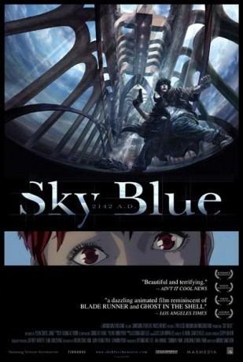

#3516 Sky Blue
 gesehen am 23.04.2016
gesehen am 23.04.2016
 
 IMDB-Wertung: 6.8 / 10
IMDB-Wertung: 6.8 / 10  Metascore: 0
Metascore: 0 
Im Jahre 2142 ist das gesamte Ökosystem der Erde durch den Menschen zerstört worden und Umweltkatastrophen peinigen den Planeten. Auf einer Insel unter einer großen Kuppel wurden die wichtigsten Köpfe der Menschheit versammelt um dort eine neue Stadt zu gründen und das Überleben der Spezies Mensch sicherzustellen. Alle übrigen Menschen haben sich um die Stadt herum in Ghettos zusammengefercht. Langsam machen sich Unmut auf Aufsässigkeit breit, was zu einer Wiederstandsbewegung gegen die elitären Mächte der Stadt führt.
Jahr: 2003
Dauer: 85 Minuten
FSK: 12
Land: Süd-Korea Studio: Starmedia Home EntertainmentTonspuren: DD5.1 - ,
Untertitel:
Auflösung: 1080p (1920x1080) Größe: 3942 MB
Genre: Action, Sci-Fi, Fantasy, Animation/Trick
Regisseur: Moon-saeng Kim
Drehbuch: Jake Kasdan
Soundtrack:
Darsteller:
- Andrew Ableson als Zed / Digger Leader
 Cathy Cavadini als Jay / Young Shua / Cheyenne
Cathy Cavadini als Jay / Young Shua / Cheyenne- David Naughton als Commander Locke / Dr. Noah
- Jeffrey Winter als Troopers
 Marc Worden als Shua
Marc Worden als Shua- Joon-ho Chung als
- Mark Lindsay als Troopers / Sentry
 Bob Papenbrook als Goliath / Governor / Typon
Bob Papenbrook als Goliath / Governor / Typon- Sunmin Park als Maya
- Mark Scarpa als Blacksmith / Troopers
- Jamie Simone als Dispatcher
- Won-Je Tak als Senior Adjutant
 Kirk Thornton als Cade
Kirk Thornton als Cade- Karl Wiedergott als Moe / Digger Foreman
- Rebecca Wink als Woody
Datei: X:\HD-Anime\Sky Blue (2003, FSK12, 1920x1080).mkv seit 22.04.2016
Festplatte: Gemischt-01+Anime
 Es gibt insgesamt 43 Filme in der Gruppe 'HD-Anime'
Es gibt insgesamt 43 Filme in der Gruppe 'HD-Anime'